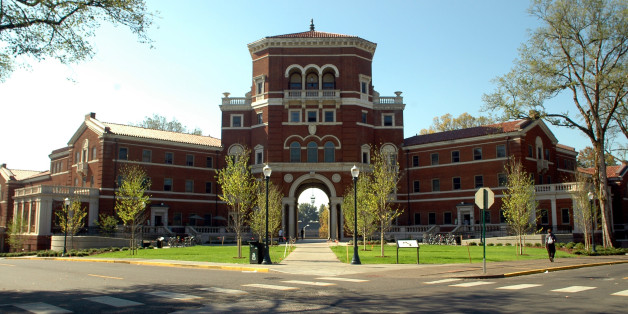

English Name: Oregon State University School Website oregonstate.edu School Introduction: Oregon State University is one of the most renowned universities in the United States, having trained a large number of leaders across various industries across the United States and the world, with an outstanding academic reputation. Oregon State University in the United States was established in...
English name: Oregon State University
School website oregonstate.edu
School Introduction
Oregon State University is one of the most prestigious universities in the United States, having cultivated a large number of leaders across various industries across the country and the world, with an outstanding academic reputation. United States Oregon State University, founded in 1868, is a century-old prestigious institution renowned worldwide for its outstanding reputation and prestige. In 2016, USNEWS ranked it 135th. As such United States One of the oldest universities, Oregon State University has participated in and witnessed the world as well United States Many major historical events. Over the past century, Oregon State University has trained a large number of leaders and elite talents worldwide, as well as numerous Nobel laureates. Oregon State University is one of the most renowned universities in the United States, with an extremely high academic reputation. Its admission process is very strict—only students with high IQ, potential, and outstanding overall qualities are admitted. Oregon State University's motto is: "Let the light of freedom shine upon the world." Oregon State University has produced many Nobel laureates and Pulitzer Prize winners, and the university boasts a large number of world-class scholars in various scientific fields. The only one in the world to receive this award simultaneously Nobel Prize in Chemistry And The Nobel Peace Prize scientist Pauling He graduated from Oregon State University. Oregon State University receives up to $1.7 billion in annual research funding. Oregon State University is one of only two universities in the United States to receive government land grants and participate in ocean, aviation, and energy programs (the other is Cornell University）。

Geographical location
Oregon covers 251,419 square kilometers, ranking tenth among the fifty states in the U.S. by area. Cascade Mountain divides the state into two distinctly different regions Geographic region。 The areas east of the Cascade Mountains are drier and have sparse vegetation. In contrast, the area west of the Cascade Mountains and all the way to the Pacific coast is densely vegetated; The Coastal Mountains, the Clemance Mountains, the Willemette Valley, and the Pacific coast are all located in the western region. These areas feature mountains, streams, valleys, abundant mineral deposits, and dense forests. The Colombian Plateau It extends eastward from Cascade Mountain toward northeastern Oregon; This is a rugged terrain Rocky zone, and deep canyons often seen cut by rivers. The basin/mountain areas in the southeast have relatively dry land. Oregon's main rivers include those in the east Snake River, as well as those located in the north Columbia River。 The main cities in the state include: Portland(Portland)、Eugene(Eugene), Salem (state capital), Gresham, and Beaverton. The state has a population of about 3.2 million. The university is located in Corvallis, Oregon, a small town of only 55,000 people, with a mild but quite humid climate. The campus is situated in a small town, surrounded by vibrant spring flowers and lush green grass, Environmental safety, about 90 miles from Portland and just an hour's drive from the Pacific coast.

Professional curriculum offerings
Bachelor's degree
Literature (4 entries)
Liberal arts, German, writing, pop Musicology
Agronomy (3 items)
Horticulture, agriculture, fisheries, and wildlife
History (1)
Science (8 topics)
Chemistry, Psychology, Environmental Science, Consulting Services, Natural Resources Science, science, and Mathematics education、Geographic Information Science, sustainable natural resources
Economics (2 fields)
Economics, Resource Economics
Education (5 topics)
Education, Science and Mathematics Education, Early Childhood Education, Pedagogy - Community College Leadership, Pedagogy - Organizational and Human Resources Education
Management (4 topics)
Fisheries management, water resources Conflict management, enterprises, and Entrepreneurial spirit and scientific professional personnel management
Engineering (2 items)
Introduction to Horticulture, platforms Distributed file systems
Law (6 topics)
Political science Sociology, anthropology, women's studies, anthropology, human development and family science
Master's degree
Literature (5 items)
English, interdisciplinary studies, creative writing, contemporary Spanish studies, design and humanities environment
Agronomy (14 areas)
Yuan Yi, Zoology、Entomology, agronomy, Aquatic science、Veterinary medicine, animal science, Agricultural education, crop science, pasture ecology and management, wildlife science, sustainable forest management, botany, and Plant pathology、Forest creatures Systems and society
Science (22)
Chemistry, Mathematics, Physics, Microbiology, Environmental Science, Geography, Geology, Statistics, Mathematics Education, Science education Consulting Services, Molecular and Cell Biology, Natural Resources, Land Science, Nuclear Energy, Medical physics, food technology, History of Science, biochemistry and... Biophysics and harmful Radiation protection Science, biology, and Ecological engineering, oceans, Earth, and Atmospheric Science
Economics (1 topic)
Education (7)
Education, adult education, mathematics education, science education, teaching, agricultural education, sports and sports sciences
Management (6 topics)
Business Administration, Public Health Studies, public policy research, Construction project management、Marine resource management, Water Resources Policy and Management
Engineering (12 items)
Computer Science, Chemical Engineering, Civil Engineering, Mechanical Engineering, Electrical and Computer Engineering, Material science、Industrial engineering, Construction Engineering Management, Water Resources Science, Water Resources Engineering, Biological and Ecological Engineering, Timber Science
Vocational education and other categories (1)
High school Student affairs management
Medicine (5)
Pharmacology Public Health, Toxicology, nutrition, medical physics
Law (5 topics)
Human Development and Family Studies, Applied Ethics, Applied Anthropology, Forest Biosystems and Society, Water Resource Policy and Management
PhD
Literature (1)
Design and Humanistic Environment
Agronomy (11 items)
Circular arts, zoology, entomology, aquatic science, animal science, crop science, pasture ecology and management, wildlife science, sustainable forest management, botany and plant pathology, forest biological systems and society
Science (20 items)
Chemistry, Mathematics, Physics, Microbiology, Environmental Science, Geography, Geology, Statistics, Mathematics Education, Consulting Services, Molecular and Cellular Biology, Land Science, Nuclear Energy, Medical Physics, Food Technology, History of Science, Biochemistry and Biophysics, Harmful Radiation Protection, Biological and Ecological Engineering, Marine, Earth and Atmospheric Sciences
Economics (1 topic)
Applied Economics
Education (4)
Education, mathematics education, sports and sports sciences, science education
Management (1 position)
Public Health Studies
Engineering (11 items)
Computer Science, Chemical Engineering, Civil Engineering, Mechanical Engineering, Electrical and Computer Engineering, Physical Sciences, Industrial Engineering, Water Resources Science, Water Resources Engineering, Biological and Ecological Engineering, Wood Science
Medicine (5)
Pharmacology, Public Health, Toxicology, Nutrition, Medical Physics
Law (3 topics)
Human Development and Family Studies, Applied Anthropology, Forest Biosystems and Society
MBA
Management (2 positions)
Master of Business Administration, Executive MBA
Preparatory course
Agronomy (1 location)
Preparatory course—veterinarian
Education (1)
Preparatory course—veterinarian
Medicine (1)
Preparatory course—Pharmacy
Language center
Education (2 topics)
General English, Academic English
Specialist
Literature (1)
Language in culture
Medicine (1)
Geriatrics
Law (5 topics)
Applied Ethics, Peace Studies, Women's Studies, Latin American Affairs, and 20th-Century Studies

Admission requirements
Undergraduate: TOEFL 60-80, IELTS 5.5-6.0, GPA 3.0
Graduate: TOEFL 80-91, IELTS 6.5-7.0, GPA 3.0

Tuition fees
Tuition: $29,900 - $30,980/year
Living expenses: $12,000/year
Total cost: approximately $42,000 per year

英文名称 Oregon State University
学校网站 oregonstate.edu
学校简介
俄勒冈州立大学是美国最著名的大学之一，该校为全美国和世界培养了大批各个行业的领袖人物，学术声誉极高。美国俄勒冈州立大学建于1868年，是一所百年名校，该校因其卓越的声誉和名誉而享誉全世界。2016年USNEWS排名第135位。作为美国历史最悠久的大学之一，俄勒冈州立大学参与并见证了世界以及美国历史上的许多重大事件。一百多年来，俄勒冈州立大学已经为全世界培养出了大批的领袖和精英人才，并培养出了多名诺贝尔奖得主。俄勒冈州立大学是美国最著名的大学之一，学术声誉极高，该校的录取非常严格，只有智商高、有潜力、综合素质非常优秀的学生才有可能被录取.俄勒冈州立大学的校训是：“让自由之光照耀世界”。俄勒冈州立大学诞生了多名诺贝尔奖得主和多名普利策奖得主，学校拥有大批各个科学领域内世界级的著名学者。世界上唯一的一名同时获得诺贝尔化学奖和诺贝尔和平奖的科学家鲍林就毕业于俄勒冈州立大学。俄勒冈州立大学每年获得的研究经费高达17亿美元。俄勒冈州立大学是全美国仅有的两所获得政府赠地以及参与海洋、航空、能源计划的大学之一（另一所大学是康奈尔大学）。
地理位置
俄勒冈州占地二十五万一千四百一十九平方公里，面积于全美五十州中排名第十。卡斯卡德山将该州区分为两个截然不同的地理区域。在卡斯卡德山以东的地区较为干燥，植物的生长也较为稀疏。而在卡斯卡德山以西、一直到太平洋沿岸的地区，植物的生长则极为茂密;海岸山地、克莱蒙斯山脉、威勒米特河谷、以及太平洋沿岸地区都位于西部地区中。此处有高山、溪流、山谷、丰富的矿藏、以及浓密的森林。哥伦比亚高原由卡斯卡德山以东向俄勒冈州的东北方延伸;这是一处地势崎岖的岩石地带，常可见被河流切割而造成的深邃峡谷。位于东南方的盆地/山地地区土地颇为干燥。俄勒冈主要的河流有位于东部的蛇河，以及位于北部的哥伦比亚河。该州主要的城市有∶波特兰(Portland)、尤金(Eugene)、沙伦(Salem，州首府)、葛雷森(Gresham)、以及比佛顿(Beaverton)。该州的人口大约有三百二十万。大学位于俄勒冈州科瓦利斯，一个只有55000人的小镇，气候颇为温和但相当潮湿。校园位于小城内，周遭春花似锦、绿草如茵，环境安全，距离波特兰市约90哩，距离太平洋海岸仅一小时车程。
专业课程设置
本科
文学(4个)
文科、德语、写作、流行音乐学
农学(3个)
园艺、农业、渔业与野生动物
历史学(1个)
理学(8个)
化学、心理学、环境科学、咨询服务学、自然资源学、科学和数学教育、地理信息科学、可持续自然资源
经济学(2个)
经济学、资源经济学
教育学(5个)
教育、科学和数学教育、幼儿教育、教育学-社区大学领导、教育学-组织与人力资源教育
管理学(4个)
工学(2个)
法学(6个)
政治科学、社会学、人类学、妇女研究、人类学、人类发展与家庭科学
硕士
文学(5个)
英语、跨学科研究、创意写作、当代西班牙研究、设计与人文环境
农学(14个)
圆艺、动物学、昆虫学、农学、水产科学、兽医学、动物科学、农业教育、作物科学、牧场生态与管理、野生物科学、可持续森林管理、植物学与植物病理学、森林生物系统与社会
理学(22个)
化学、数学、物理、微生物学、环境科学、地理学、地质学、统计学、数学教育、科学教育、咨询服务学、分子与细胞生物学、自然资源学、土地学、核能、医学物理学、食品科技、科学史、生物化学与生物物理学、有害辐射防护学、生物与生态工程、海洋地球与大气科学
经济学(1个)
教育学(7个)
教育、成人教育、数学教育、科学教育、教学、农业教育、运动和体育科学
管理学(6个)
工商管理、公共健康学、公共政策研究、建筑工程管理、海洋资源管理、水资源政策与管理
工学(12个)
计算机科学、化学工程、土木工程、机械工程学、电气与计算机工程、物质科学、工业工程、建筑工程管理、水资源科学、水资源工程、生物与生态工程、木材学
职教及其他类别(1个)
高校学生事务管理
医学(5个)
法学(5个)
人类发展与家庭研究、应用伦理学、应用人类学、森林生物系统与社会、水资源政策与管理
博士
文学(1个)
设计与人文环境
农学(11个)
圆艺、动物学、昆虫学、水产科学、动物科学、作物科学、牧场生态与管理、野生物科学、可持续森林管理、植物学与植物病理学、森林生物系统与社会
理学(20个)
化学、数学、物理、微生物学、环境科学、地理学、地质学、统计学、数学教育、咨询服务学、分子与细胞生物学、土地学、核能、医学物理学、食品科技、科学史、生物化学与生物物理学、有害辐射防护学、生物与生态工程、海洋地球与大气科学
经济学(1个)
应用经济学
教育学(4个)
教育、数学教育、运动和体育科学、理科教育
管理学(1个)
公共健康学
工学(11个)
计算机科学、化学工程、土木工程、机械工程学、电气与计算机工程、物质科学、工业工程、水资源科学、水资源工程、生物与生态工程、木材学
医学(5个)
药物学、公共健康学、毒理学、营养学、医学物理学
法学(3个)
人类发展与家庭研究、应用人类学、森林生物系统与社会
MBA
管理学(2个)
工商管理硕士、行政工商管理硕士
预科
农学(1个)
预备课程-兽医
教育学(1个)
预备课程-兽医
医学(1个)
预备课程-药学
语言中心
教育学(2个)
通用英语、学术英语
专科
文学(1个)
文化中的语言
医学(1个)
老年病学
法学(5个)
应用伦理学、和平研究、妇女研究、拉美事务、20世纪研究
入学要求
本科：托福 60-80 雅思 5.5-6.0 GPA 3.0
研究生：托福 80-91 雅思 6.5-7.0 GPA 3.0
学费情况
学费：$29900 - $30980/年
生活费：$12000/年
总费用：$42,000左右/年
English edition. Select 中文原文 to compare with the original Chinese article.
This article is edited and published by Liaoning Overseas Study Service Co., Ltd. The content is for study abroad planning reference only. Unauthorized reproduction is prohibited.
Information on policies, regulations, admissions brochures, and program fees is timely. Please refer to the latest releases from official institutions and institutions in various countries; For detailed verification, please Contact an advisor。